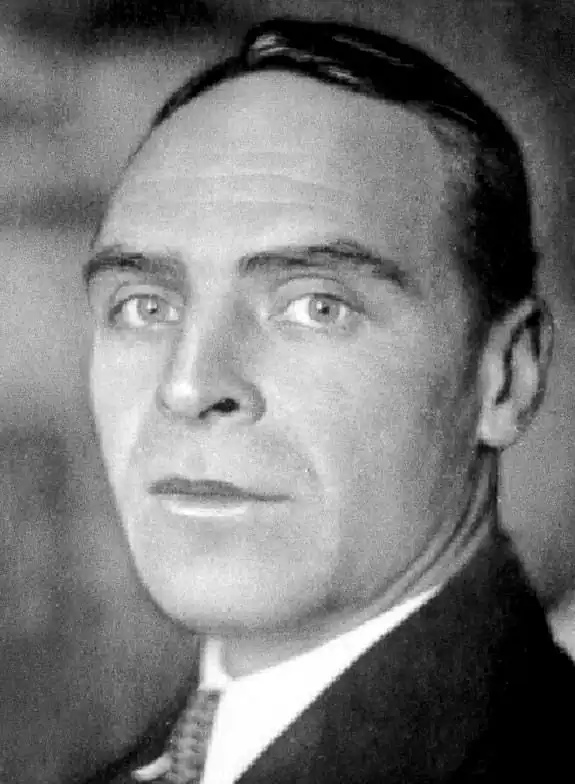

Народився 15 січня 1899 року в південноукраїнському місті Олександрії. Батько його – із старого козацького роду; дід по матері – був матрос і бурлака. Може це й визначило "мандрівницьку жилку" Леоніда Малошийченка, що дав одні із перших в українській літературі морські нариси й поезії.
Був виключений з Олександрійської гімназії за видання підпільного гумористичного журналу, закінчив гімназію в Кишиневі. Під час революції працював у пресовому агентстві Укрроста, грав у театрі ім. Франка (1921), писав п'єси, поеми, перекладав Мольєра. 1922 після невдалої спроби з власним театром "Махудрам" (Майстерня художньої драми) кинувся у вир пригод на Сибір і Далекий Схід, до берегів Китаю. У Владивостоці працює в газеті, журналах, кіно, стає секретарем китайського консуляту, видає збірку своїх імажиністичних поезій "Профсоюз сумасшедших", придумавши для неї тоді вперше псевдонім Чернов. Неспокійна вдача і доба несе його далі пароплавом до Індії, перебування в якій пізніше описав у першій своїй книжці українською мовою "125 днів під тропіками". Його шлях лежить далі через Бомбей, Каїр, Одесу... Деякий час живе в Ленінграді і, нарешті, хворий на туберкульоз, осідає в рідному лоні України. Та тут його знову опановує шал активності – в атмосфері тодішнього загального українського відродження. З 1927 року він починає друкувати в українських радянських журналах свої поезії й оповідання. Того ж 1927 року видає збірку оповідань "Сонце під веслами". В 1929 році часто друкується в "Літературному ярмарку", четверте число якого оформлене його інтермедіями (там же і шкіц його біографії, написаної Валеріяном Поліщуком). Друкується в органі літературної групи Валеріяна Поліщука "Авангард" (конструктивісти), а в 1930 році – в журналі "Пролітфронт" (ч. 7-8). Остання його книжка поезій – "На розі бур" – появилась вже після його смерті (23 січня 1933 в Харкові). Була вона вибором поезій різних періодів і готувалась до друку під заголовком "Кобзар на мотоциклі". Збірка "На розі бур", оформлена славетним майстром Анатолієм Петрицьким, появилась друком завдяки заходам Олекси Слісаренка наприкінці 1933 і була негайно сконфіскована і знищена цензурою.
Леонід Чернов-Малошийченко був ніби ідеологом нової України, вже не селянської. Був закоханий в індустріалізаційну добу України і це відбилося в його творчості: Він думав і вірив, що цю нову Україну творить техніка і що Україна мусить її прийняти, якщо не хоче надалі залишитися у "трагічному, вічному сні малоросійських клоунад". У своїх писаннях був відважний понадміру, відверто писав проти "задолизів", про те, що "честь і гідність нині не в пошані":